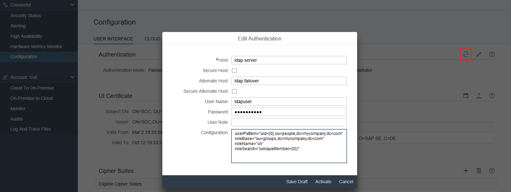
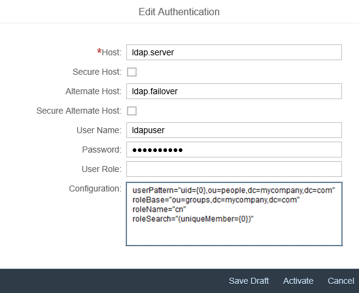

Using LDAP for Authentication
You can use LDAP (Lightweight Directory Access Protocol) to configure Cloud connector authentication.
After installation, the Cloud connector uses file-based user management. Initially there is one Administrator user with the password manage, which needs to be changed on the first logon. As an alternative to this file-based user management, the Cloud connector also supports LDAP-based user management. If you have an LDAP server in your landscape, you can configure the Cloud connector to use the users available on that LDAP server. All users that are in a group named admin or sccadmin will have the necessary authorization for administrating the Cloud connector. This group membership is checked by the Cloud connector.
- Choose Configuration from the main menu and go to tab User Interface.
- In section Authentication, choose Switch to
LDAP.

- If you want to save intermediate adoptions of the LDAP configuration, choose Save Draft.
- Usually, the LDAP server lists users in an LDAP node and user groups in
another node. In this case, you can use the following template for LDAP
configuration. The template can be copied into the configuration text area
by choosing the rightmost button immediately below the text area. The
template looks like
this:
userPattern="uid={0},ou=people,dc=mycompany,dc=com" roleBase="ou=groups,dc=mycompany,dc=com" roleName="cn" roleSearch="(uniqueMember={0})" - Change the ou and dc fields in userPattern and roleBase, according to the configuration on your LDAP server, or use some other LDAP query.
- Provide the LDAP server's host and port (port 389 is used by default) in the Host field. If you want to use the secure protocol variant LDAPS based on TLS, select the Secure checkbox to do so.
- Provide a failover LDAP server's host and port (port 389 is used by default) in the Alternate Host field. If you want to use the secure protocol variant LDAPS based on TLS, select the Secure checkbox to do so.
- Optional: You can provide a service user and its password in the fields User Name and Password.
- Optionally, you can override the role to check for permissions in User Role. If not provided, Cloud connector will check permissions for the default role sccadmin. After finishing the configuration, choose Activate. Immediately after activating the LDAP configuration, a restart of the local server is enforced which invalidates the current browser session. You need to refresh the browser and to perform a new logon to the Cloud connector, this time with the credentials configured at the LDAP server. If you want to use the secure protocol variant LDAPS based on TLS, select the Secure checkbox to do so.
- To switch back to file-based user management, choose the Switch icon in section Authentication again.
For more information about how to set up LDAP authentication, see tomcat.apache.org/tomcat-7.0-doc/realm-howto.html .
.
The same operation is possible on the shadow instance in a high availability setup (choose Shadow from the main menu of the shadow instance and go to tab Authentication):

In case your LDAP settings do not work as expected, you can use the useFileUserStore tool, provided with Cloud connector version 2.8.0 and higher, to revert back to the file based user store:
- Change to the installation directory of the Cloud connector. To adjust the userstore, execute the following command:
-
Microsoft Windows: useFileUserStore
- Linux, Mac OS: ./useFileUserStore.sh
-
- The tool will inform you about the successful modification of the user store.
- To activate the file based user store, you need to restart the Cloud connector.
For older versions you need to manually edit the configuration files as described below.
Depending on your operating system, the configuration file is located at:
- Microsoft Windows OS: <install_dir>\config_master\org.eclipse.gemini.web.tomcat\default-server.xml
- Linux OS: /opt/sap/scc/config_master/org.eclipse.gemini.web.tomcat/default-server.xml
- Mac OS X: /opt/sap/scc/config_master/org.eclipse.gemini.web.tomcat/default-server.xml
- To revert to file-based user management, replace the Realm section with
the following:
<Realm className="org.apache.catalina.realm.LockOutRealm"> <Realm className="org.apache.catalina.realm.CombinedRealm"> <Realm X509UsernameRetrieverClassName="com.sap.scc.tomcat.utils.SccX509SubjectDnRetriever" className="org.apache.catalina.realm.UserDatabaseRealm" digest="SHA-256" resourceName="UserDatabase"/> <Realm X509UsernameRetrieverClassName="com.sap.scc.tomcat.utils.SccX509SubjectDnRetriever" className="org.apache.catalina.realm.UserDatabaseRealm" digest="SHA-1" resourceName="UserDatabase"/> </Realm> </Realm> - To restart the Cloud connector service, proceed as described below depending on your operating system:
- Microsoft Windows OS: Open the Windows Services console and restart the cloud connector service.
- Linux OS: Execute command: service scc_daemon restart
- Mac OS X: Not applicable because no daemon exists; it is only a "developer version".